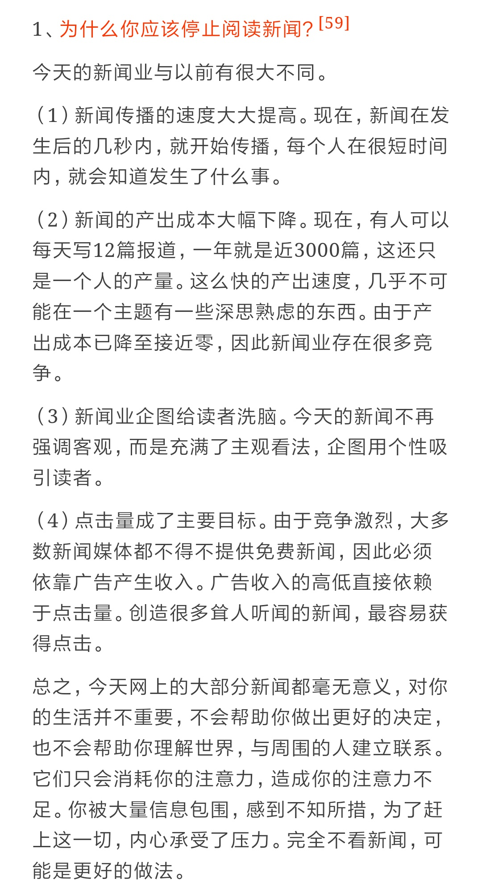

数字痴呆化
豆瓣地址：数字痴呆化
这是一本简单的科普书籍，因为真的很容易就看懂，假期花了三个小时，粗略的把这本书看过一遍，看完之后，过了两天，我就基本忘记了大半，不过看的时候，还是划了一些句子，于是乎，今天又重新回顾一遍。
数字媒介让我们的生活更加美好，变得非常的便捷，但这不也是一把双刃剑吗？仔细想想，就知道了。作为被数字媒介包围的现代人，我们是不是应该反思，究竟是我们使用数字媒介，还是数字媒介绑架了我们。
在阮一峰老师的每周分享-第 49 期 里面有提到一篇文摘《为什么你应该停止阅读新闻》。其实不仅仅是新闻，很多信息都过剩了，我们的注意力，很容易就被这些信息所吸引，我们必须要为自己去建立一个过滤网，筛选掉那些我们不必理会的信息。

摘录
网络似乎破坏了我集中注意力和进行沉思的能力。我的精神期待着准确地接受网络提供的信息，以一种飞快运用的小粒子流的形式······我的朋友们也这样说：网络用的越多，在写较长段落时就必须越发集中注意力。
如果一个人简单的在网络上问某人问题而不亲自研究这个题目，那么他根本不能理解，他为什么做这项工作。
痴呆症开始的一个典型现象：对很遥远的事情的记忆还存在，但却不能很好地记住新事情、新世界。
怎么样才能保持精神健康呢？忘记填字游戏和数独游戏，去慢跑！
大多数人甚至根本想不到：网络上比现实事件存在更多的欺骗，同时，人们也更经常在那里行骗。通过鼠标开辟出虚拟世界的人，比那些理解现实世界的人把这个世界想象的更坏（ps: 另外一本书有提到类似的观点，但同时也说了网络往往使人更容易相信别人，尽管别人很可能是骗子）
网络没有塑造人，反而通过更多的娱乐让人变傻。
学习以独立的脑力劳动为前提，越多、越深入地在大脑中处理事情，学到的东西越多。
对于现代信息技术会促进学习这一断言，目前还没有充分的证明。信息技术导致思维表面化，注意力分散，还会带来违背意愿的副作用——从纯粹的干扰到色情和暴力。
如果有人在处理某些不能立即解决的问题时，就会想到网络或搜索引擎——谷歌。
电脑和网络是不可思议的强大的匿名工具。在其他任何地方，都没有比在这社交网络里有更多的化身、化名、假地址、假身份以及其他伪装的冲突了。如果不知道对方是谁，就可以肆无忌惮地做出不当行为。
人是通过阅读来学习阅读。如果可供阅读的时间被视频游戏所占用，那么，不可避免地会造成学生学习成绩变差。
众所周知，个人的自由（也包括审美观的自由）一旦损害到他人的自由或伤害到他人时，就应该禁止。
在玩电脑游戏时，暴力欲望不断增加，面对真实的暴力时，会迟钝麻木，同时会被社会孤立，受教育机会也会减少。
对某个专业领域一无所知的人，不会因为使用了谷歌而变得更加机智。但是，对某个专业领域知之甚多的人，却能够非常容易地借助谷歌或其他出处提取出为实现某一目标所缺乏的最新、最小、最后一点信息。已有的基础知识起到过滤器的作用，人们可以借助它，从50或50万次 敲击搜索引擎中，过滤出重要的、能达到目标的信息。网络通行证和媒体能力都不能替代这种专业知识。
真正的知识不是借助搜索和略读而学会的，而是通过积极研究、反复思考、一再揣摩、质疑、分析，从而重新合成内容。
我们在“数字时代”的生活特征首先是，我们一直同时做着所有能做的事情：我们在电脑前查资料，同时听音乐，在手机上写短信。原本正在读取报纸上的文章时，背后的电视机也开着，然后固定电话铃响了。
多任务执行者不仅很难忽视掉外在的分散注意力的信息，排除自身的分散注意力的记忆内容的能力也较差。总的来说，他们更容易分散注意力。
并不是不愉快的经历会带来压力，而是完全听任别人摆布的感觉会造成压力。当我们知道，我们不能带来任何影响，没有任何控制能力，这就会使我们（与在老鼠身上一样）产生慢性压力。只有当我们失去控制时，我们才会感受到压力。
人们不得不产生这种印象，即喜欢上网的大学生会减少自己在真实世界中的活动，由此更加被社会孤立。先从社会中退出、导致害怕真实地与人接触、从而再次退出，这一著名的恶性循环由于网络的多种可能性得到了加强。因此，一系列研究表明，孤独与上网之间存在明显关联。
在网上比在现实世界中更容易受到欺骗。用鼠标开辟了虚拟世界的人，与感知真实世界的人相比，对世界的思考明显更差（因为明显更慢）。
书中的几点建议
- 吃得健康！很多疾病都是因为吃而引起的，千万不能这样。多吃蓝莓、西兰花，偶尔吃一小盒巧克力，喝一杯红酒，吃一点鱼（尽量小一点的鱼，大鱼中可能已经积聚了小的、可食用的有害物质）。
- 每天做半个小时运动（如步行去工作单位或去购物，然后再步行返回），这是您对您的身体做得最好的事。
- 您试着少一点处在“心不在焉”的状态中。把您的注意力有意识地集中在这里和现在！在专业期刊《科学》上发表的一项研究证实了打坐师傅的古老建议，即人应该把注意力集中在这里和现在，而不是其他任何地方。谁能做到这一点，谁就会更快乐；谁（尤其是在老年时，回忆过去）在冥思苦想，谁就不快乐。
- 请您只做那些能做的事。我们倾向于对自己提出高要求。因此，我们只可能失败，对自己更加失望。我们以这种方式教会了自己失败，使自己不快乐。
- 请您帮助他人。大型研究已表明，帮助别人对帮助者很健康，钱只会给那些把钱花在别人身上的人带来快乐。
- 顺便说一下钱：钱既不会使人快乐，也不会给人带来健康。这个想法并不是指吝啬和孤独，而恰恰是接近其反面。如果您一定要花钱，那么请您在大事上花钱，而不要把钱花在小事上。东西会变旧、生锈，需要空间，会蒙上灰尘。您会越来越令人讨厌，同时会把我们拉下水。如果遇到大事，情况恰好相反：这些事情过去越久，我们越觉得美好。人们把这些事情保存在记忆中，它们将成为我们的一部分——除非我们患上痴呆症。但是，小事对我们来说没有任何用处。
- 经常有意识地听一听音乐。大脑研究已证明，音乐可以限制负责恐惧的大脑区域的活动，同时增加负责快乐的大脑区域的活动。请您像对待好吃的东西一样对待好音乐，这二者不应该在工作期间或在电梯里享受。虽然这也是可能的，但是，集中注意力的话，会从中得到更多。
- 唱歌，因为这也很健康。如果您不敢，或者害怕有人听见，那么您就在车里唱。调到一个您喜欢的音乐节目电台，大胆地跟着唱。
- 微笑！即使您笑不出来。我们的感觉不是从大脑到腺体和肌肉的单行道。更多时候，我们的大脑也从身体中接收信息，由此开辟出自己的感觉状态：突然心悸，可能仅仅因为感到害怕。人不是因为悲伤而哭，而是因为哭而悲伤。笑也一样。谁在微笑，即使是没有缘由的，谁就是在为负责良好感觉的大脑区域提供支持。肉毒素（Botox）不仅阻止了笑纹的产生，还阻止了快乐的感觉。